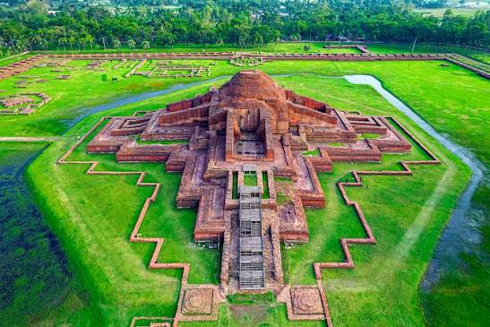
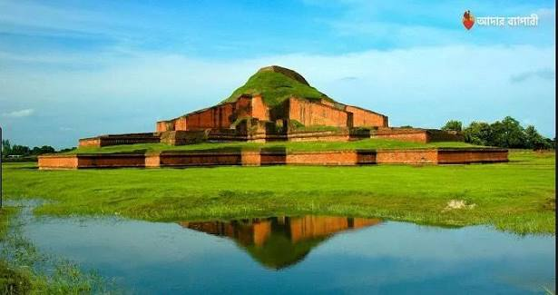

Historical importance
Paharpur and Mahasthangarh are significant records of early Buddhist learning and ancient urban life in Bengal. Later mosques, temples, and estates also reflect the region’s layered cultural past.
Heritage of the north-west
Ancient monuments, silk weaving, mango orchards, and the wide horizons of the Padma basin.
Introduction & location
Rajshahi Division lies in north-western Bangladesh, along the fertile plains of the Ganges, known locally as the Padma, and its tributaries. The region’s dry-season climate and rich soils have shaped its orchards, farms, and distinctive seasonal rhythms.
Historic sites across the division preserve evidence of Buddhist, Hindu, and Muslim periods, while Rajshahi city is recognised for education, silk, and mangoes.
Discover the region

The remains of Somapura Mahavihara in Naogaon are among South Asia’s most important archaeological and UNESCO World Heritage sites.

Near Bogura, this ancient fortified settlement offers a remarkable window into the region’s long history.
Enjoy open river views, sunset walks, and the relaxed riverside landscape of Rajshahi city.
Heritage & everyday life
Paharpur and Mahasthangarh are significant records of early Buddhist learning and ancient urban life in Bengal. Later mosques, temples, and estates also reflect the region’s layered cultural past.
Rajshahi’s identity is woven through silk production, folk performance, fairs, and harvest customs. The mango season brings its own celebrations and draws visitors to orchards across the north-west.
Seasonal mangoes are the signature, alongside kalai ruti, locally made sweets, and traditional rice dishes. The region’s fruit varieties are enjoyed fresh and used in drinks, chutneys, and desserts.
Agriculture, mango and other fruit cultivation, silk, fisheries, and education contribute to the regional economy. Alluvial soil and the Padma basin are key resources for farming and inland livelihoods.
The Padma, Jamuna, Atrai, and Baral systems nourish floodplains, wetlands, and seasonal chars. These habitats sustain freshwater fish and birds, while agricultural landscapes support an important rural biodiversity.
Rajshahi safeguards major archaeological heritage and supports national food production, horticulture, and traditional silk craft. Its riverine landscapes also show how communities adapt to a changing delta.